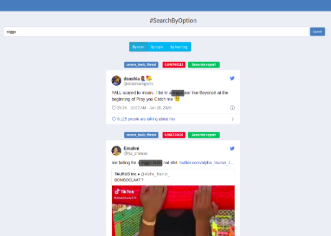
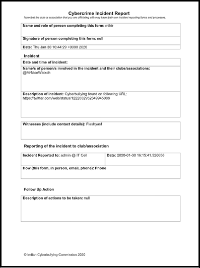

An application system for detecting and preventing cyberbullying on social media platforms
In the present information age, the rise of social media has become one of the biggest technological advancements. Social media platforms help users to share their thoughts and opinions, connect with their friends and new people all around the world along with many other benefits and services. However, social media is also a major contributor to cyberbullying.
To prevent or reduce cyberbullying, we have developed a model to detect and stop an ongoing cyberbullying attack, or even to prevent cyberbullying attacks while or before they happen. This model is used in a system to classify tweets as bullying or non-bullying based on the toxicity score. The features of the system include visualization of statistics, search methods to find cyberbullying, and automatic report generation. Additionally, implementing the same on Telegram Bot and Chrome Extensions to detect and prevent cyberbullying.
This project was made as a part of the Smart India Hackathon 2020, during my 3rd year of engineering. For getting shortlisted for the main SIH hackathon, we first had an internal college round where around 100+ teams presented their ideas on different problem statements, out of which 35 teams were selected for the internal hackathon. During the 36 hours of the hackathon, we built our solution to showcase the idea, and after multiple presentations and reviews, we were awarded the 2nd runner-up prize and selected to participate in the main SIH hackathon. However, this hackathon was not conducted due to the lockdown announced in March.
Team Members: Anay Kulkarni, Kaustubh Damania, Fatema Motiwala (myself), Mihir Gada, Kunal Sonawane and Vignesh Vishwanathan.
The entire team was involved in brainstorming the idea for the problem statement and coming up with a solution. During the hackathon, we divided the development of the different modules. My role, shared with another team-mate, involved developing the admin dashboard and integration of various analytical features on it.
Cyberbullying involves posting and sharing wrong, private, negative, harmful information about the victim. In today's digital world we see many such instances where a particular person is targeted. We are looking for a software solution to curb such bullying/harassment in cyberspace. Such a solution is expected to:
Our proposed solution for the problem consisted of the following features:
The model is implemented on the system for evaluating the results on the live data “crawled” from social media websites which are also stored in the database. The model classifies these threads/comments as toxic or not. These results along with additional features like analytics, report facilities, etc. are displayed in the dashboard. “Chrome extension” sends the present web page’s content to the model for classification. The “filtered content” is displayed back to the page, in such a way preventing the display of explicit content.
We deployed bots on Twitter using Tweepy and passed those posts, comments scraped to our model to identify whether they were toxic. Additionally, we stored all this information within our MongoDB database. Our model consisted of an “attention-based” transformer model for text and “CNN-LSTM based” model for images/audios/videos.
The web application was built using Python’s Flask framework and consists of a number of features.
Admin Dashboard
The admin dashboard features a graphical visualization of the results generated by the model. The graphs displayed are, namely, monthly and weekly distribution of cyberbullying activities, sentiment analysis distribution of bullying and non-bullying reports, website-wise distribution of cyberbullying instances, list of recent instances of cyberbullying, and worldwide distribution of cyberbullying instances.
Search
This option provides three methods to search by, which are by users, by hashtag, and by topic. These filters check the corresponding sections of each tweet and return a probability of the text being offensive, as well as the relevant tags i.e. toxic, severely toxic, threat, insult. An option to auto generate a report for each incident is provided.

Report Generation

A report is generated to document the incident and can be sent to the authorities for further action. It is auto-generated using Python docxtpl in .docx format by the application and consists of the following details:
Upon generation, the report can be auto mailed to the pertinent authorities. These details can also be edited by the admin before mailing.
Google chrome extensions are additional add-ons that supplement our main application. In our implementation, we have two extensions that are created using HTML, CSS, and Javascript.
NSFW Detector
This extension scans the entire webpage and parses the content to check for offensive words and phrases by passing them through the model. It can hide and redact those phrases and images. The extension passes all the images on the webpage to NanoNets Content moderation API, which returns the probability of the image being Safe For Work (SFW) or Not Safe For Work (NSFW). Accordingly, the extension replaces all NSFW images with a default image.
WhatsApp Bullying Detector
The blocker works on WhatsApp Web, and passes the input message through the model, and disables the send button if the input message contains toxic or cyber-bullying content.
Telegram Bots are third-party applications that run inside Telegram where users interact with bots deployed on the server. The bot passes all the messages through the model and the images through NanoNets Content moderation API, and based on the results if the message or image is offensive would give the user warnings. Upon incurring 3 warnings, the bot removes the transgressor. A Python Telegram API was used to create the Telegram bot.
For now, the bot works for Twitter, so it can be extended to various other social media platforms like Instagram, Reddit, etc. Currently, only images are classified for NSFW content, classifying videos and audios could be an addition. A report tracking feature could be added along with a cross-platform Mobile / Desktop application (Progressive Web App) for the Admin dashboard. The model could be Implemented for various languages like French, Spanish, Russian, etc. along with Indic languages like Hindi, Gujarati, Marathi, etc.